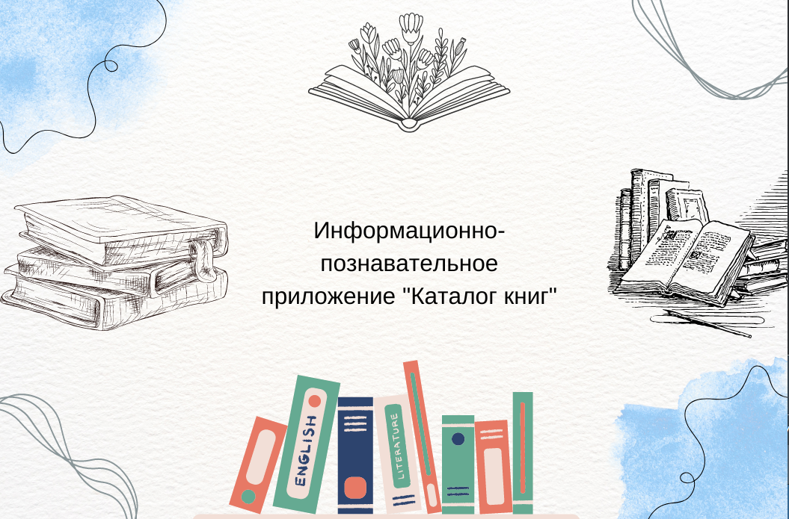
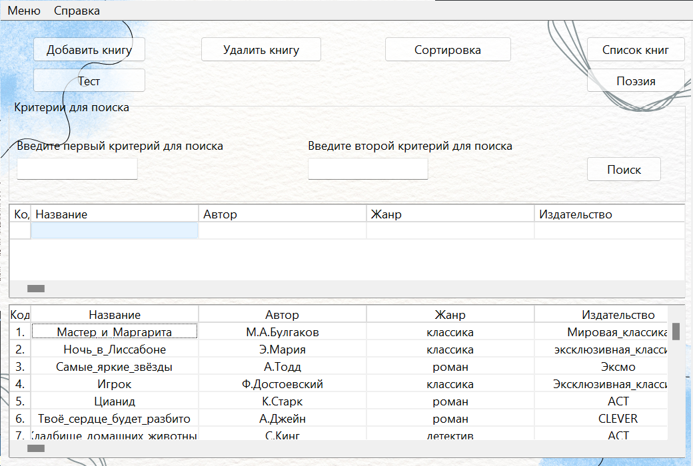
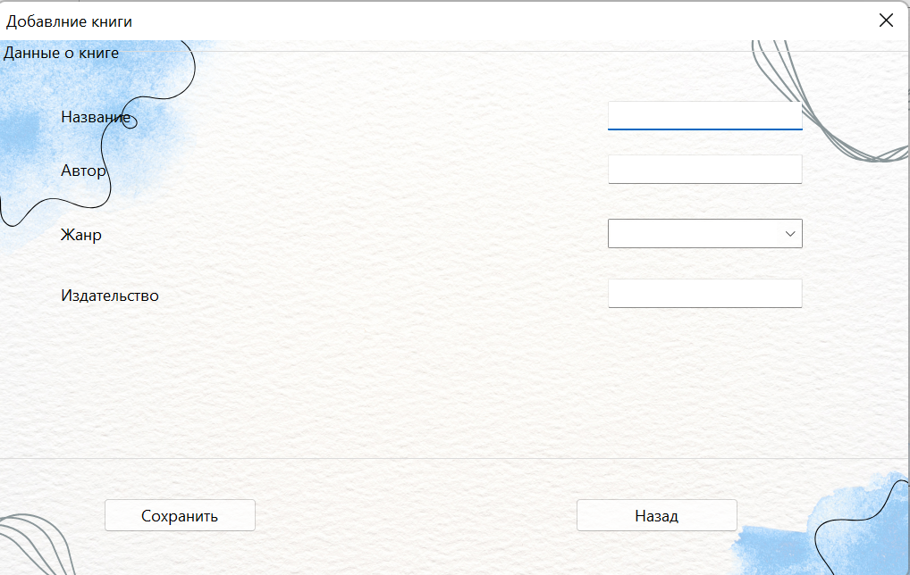
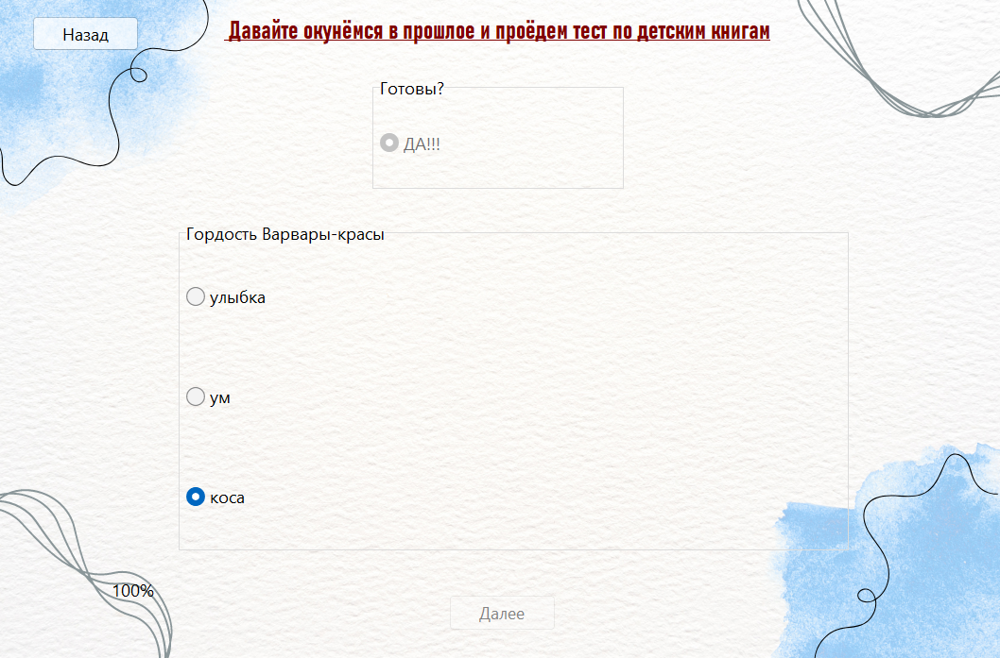
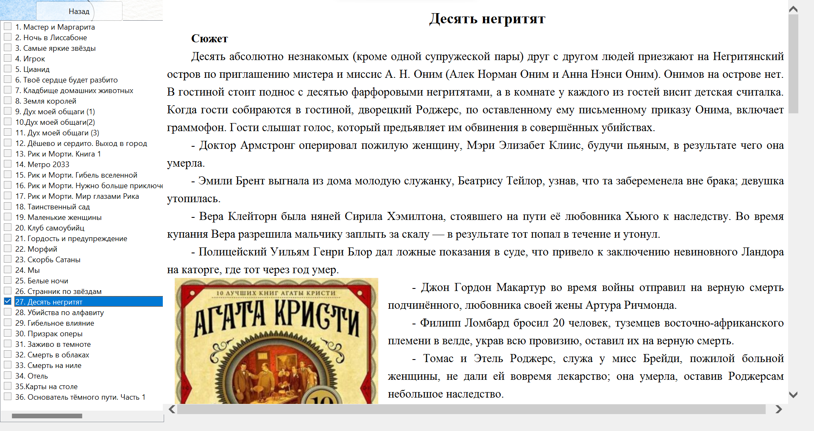
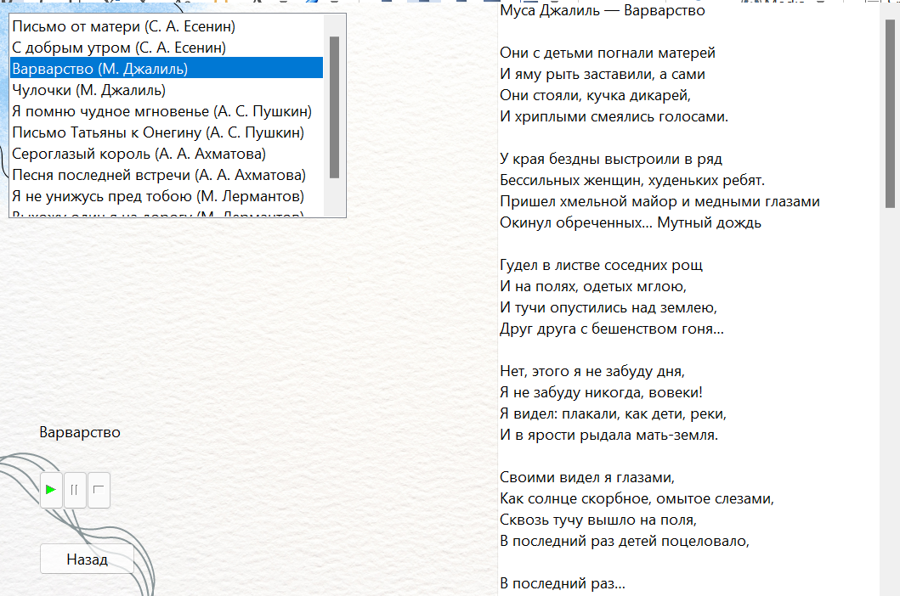
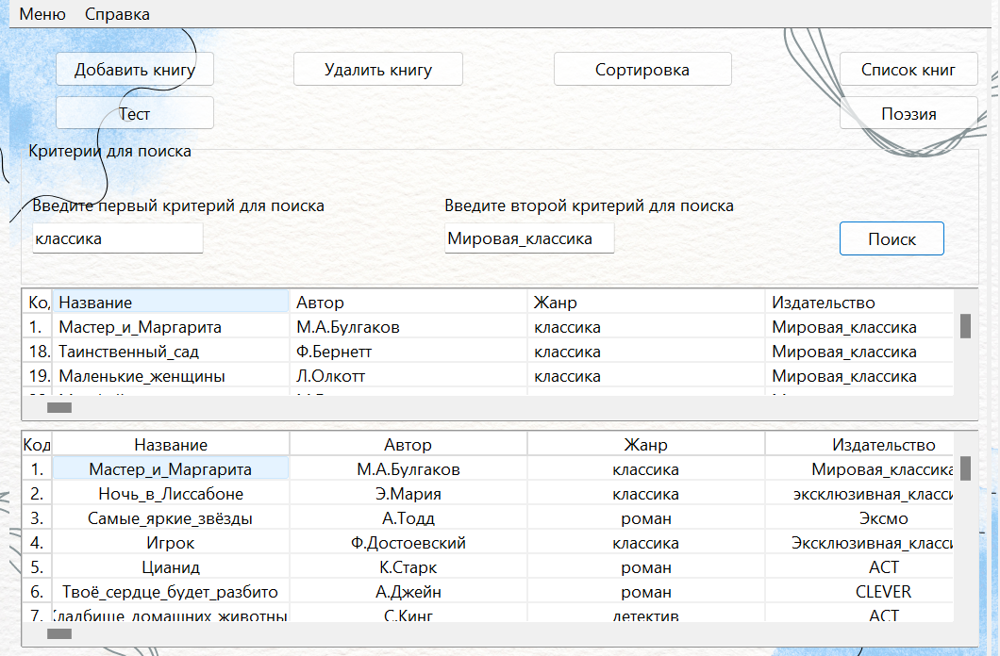
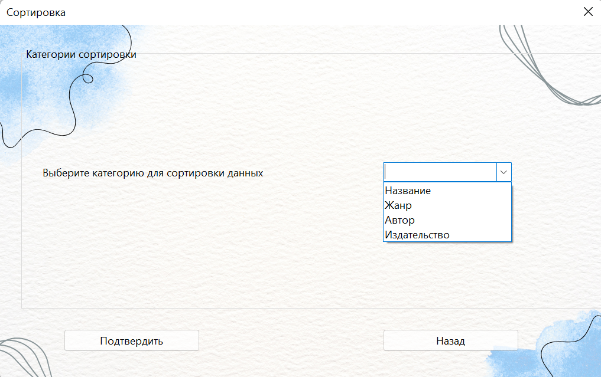
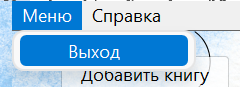

TEXT SCRAMBLING in TRIAL VERSION OUTPUT! In evaluation mode, Help+Manual will scramble individual characters in random words in your published output files. This is a limitation of the free trial version. This help system was created with an evaluation copy of Help+Manual.
Navigation: UNREGISTERED EVALUATION VERSION >


TEXT SCRAMBLING in TRIAL VERSION OUTPUT! In evaluation mode, Help+Manual will scramble individual characters in random words in your published output files. This is a limitation of the free trial version. This help system was created with an evaluation copy of Help+Manual.
Каталог книг
После запуска программы на экране появляется загрузка экрана (Рисунок1).

Рисунок 1 – Загрузочная заставка
Затем загрузится главная форма с кнопками для ознакомления с программой (Рисунок 2).

Рисунок 2 - Главная
При нажатии на кнопку "Добавить книгу" появляется экран с выбором данных про книгу, которую мы хотим добавить (Рисунок 3).

Рисунок 3- Добавление книги
А при нажатии на кнопку "Удаление книги" можно удалить любую книгу из списка находящегося в StringGrid1. Далее мы можем пройти интересный тест по детским книгам и узнать свой результат их знания с помощью нажатия на кннопку "Тест" (Рисунок 4).

Рисунок 4 -Тест
Также можно изучить весь список книг через веб-браузеры(Рисунок5).

Рисунок 5-Сайты
Далее будет предложение одновременно послушать и почитать стихи (Рисунок-6):

Поэзия(Рисунок-6)
Можно организовать поиск по книгам на главной странице (Рисунок 7): 
Рисунок 7- Поиск
А вот при нажатии кнопки "Сортировка" можно отсортировать список книг по выбранному столбцу (Рисунок 8):

Рисунок 8 - Сортировка
Завершить работу с программой можно единственным способом через Меню - Выход (Рисунок 9):

Рисунок 9 - Выход из программы